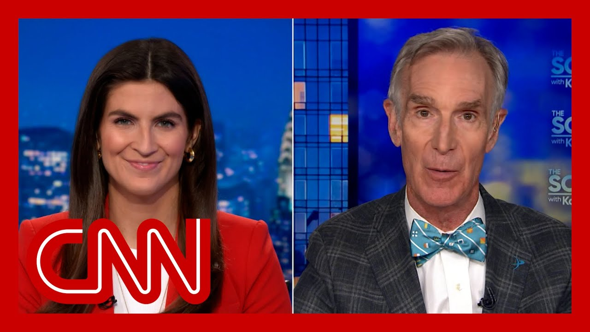

来B站一起耍【Global每日英语简报】
【美国宇航局科学的“灭绝级事件”：比尔·奈谈特朗普的预算削减提案】
Summary: NPR and PBS are challenging Trump's executive order to defund public broadcasting, arguing it’s legally and politically untenable, while Bill Nye warns proposed NASA budget cuts would devastate space science.
摘要： 美国国家公共电台和公共广播公司正就特朗普撤销公共广播资金的行政令发起法律挑战，称其不合法且不得人心；比尔·奈警告称，美国宇航局预算削减提案将重创太空科学研究。

⏱️ Estimated Reading Time: 5 min
Tonight, NPR and PBS are vowing a legal fight with President Trump after he issued an executive order instructing the Corporation for Public Broadcasting to defund the organization.
今晚，美国国家公共电台和公共广播公司誓言与特朗普总统展开法律斗争，此前他签署行政令要求公共广播公司停止资助该机构。
They're arguing he can't do that.
他们辩称他无权这样做。
His order claims that America's two biggest public broadcasters should not get the more than $500 million in taxpayer funds to public radio and TV stations nationwide because, he argues, they don't present a fair, accurate or unbiased portrayal of current events.
该行政令声称，美国两大公共广播机构不应获得超过5亿美元的纳税人资金用于全国公共电台和电视台，理由是它们未能公正、准确、无偏见地报道时事。
Despite the president's order, the CPB is a private entity, and it was created that way by Congress to insulate it from political pressure.
尽管总统下达了命令，公共广播公司是私营实体，国会当初如此设计正是为了使其免受政治压力。
NPR tonight says it's going to challenge this.
美国国家公共电台今晚表示将对此提出质疑。
My source tonight is Bill Nye, who we all know from PBS is Bill Nye the Science Guy and also the CEO of The Planetary Society.
公共广播公司首席执行官表示："这一切发生之际，总统新提出的预算案将从美国宇航局削减逾60亿美元资金，将其重点从太空科学转向让宇航员登陆月球和火星。"
And it's great to have you back here, sir, because obviously, you've reached countless viewers through PBS over the years fostering a love and an understanding of science.
我今晚的消息来源是比尔·奈，公共广播公司观众熟知的"科学小子"比尔·奈，他现任行星学会首席执行官。
I wonder what you make of this news tonight?
很高兴您再次做客，先生，因为多年来您通过公共广播公司让无数观众培养了对科学的热爱与理解。
Well, it's not good news.
您如何看待今晚这则新闻？
In modern terms, it will be unpopular.
这不是好消息。
You'll find that a great many small communities rely on public broadcasting for weather information, for evacuation information.
用现代的话说，这将不得人心。
And then everybody who's a parent has raised their kids using public broadcasting children's programming.
你会发现许多小社区依赖公共广播获取天气信息、疏散信息。
There's nothing like it.
每个为人父母者都曾通过公共广播的儿童节目养育子女。
And that's why the organization was created.
这无可替代。
The system was created.
这正是该机构成立的初衷。
And that's why people are going to push back against this.
这个体系就是这样建立的。
This will be very unpopular with members of Congress.
因此人们会抵制这种做法。
In the Senate, they will push back.
国会成员会强烈反对。
And this is another executive order that was made for reasons that aren't entirely clear.
参议院将予以回击。
But it will not... people I don't think will stand for it.
这又是一道动机不明的行政令。
And the legal issue will go on for a long time.
但人们...我认为人们不会容忍。
You personally must have interacted with so many over the years who have talked about how beneficial that was to them or to their kids or to their families.
法律争议将持续很久。
I put my heart and soul into that.
这些年来您一定接触过无数人，他们谈及公共广播对自己、孩子或家人的裨益。
And this is elementary science.
据估计...数亿人观看过《科学小子》节目。
Everything happens for a reason.
我倾注了全部心血。
And in that reason, it's usually physics.
这是基础科学。
And those people are going to get their love of science from public broadcasting.
对许多我交谈过的人而言，这几乎是他们在初高中阶段接受的主要科学教育。
This is very well documented.
我们制作该节目的依据是20世纪关于人们获取基础科学认知需求的重要研究。
This is not in the national interest and unpopular.
凡事皆有因。
I don't remember what I learned in the sixth grade, but I remember what I learned watching Bill Nye.
而这个原因通常是物理学。
Imagining distances in space is difficult because everything is so far apart.
若想拥有先进军事能力，就需要工程师和物理学家来建造这些系统。
Everyone loves that understanding.
而这些人的科学热情将源自公共广播。
Well, it's very troubling.
这有充分记录。
That's true again today.
这不符合国家利益且不得人心。
The current administration plans to abandon that.
我不记得六年级学了什么，但记得从比尔·奈节目中学到的知识。
That's a fantastic waste of taxpayer dollars.
他的讲解令人难忘、易于理解且充满乐趣。
Furthermore, Mars is just one example.
想象太空距离很困难，因为万物相距甚远。
This is in no one's best interest.
但可以这样想：若这个微型太阳位于足球门柱上，最近的恒星在700公里外。
NASA is the best brand the United States has.
人人都喜欢这种解释。
The most untrustworthy person on earth?
考虑到公共广播机构也在削减美国宇航局预算，并优先考虑载人登月及火星任务，您作何评价？
Apparently it's Russ Vought at the Office of Management and Budget.
这令人非常不安。
We'll see how long Congress tolerates this.
行星学会由卡尔·萨根创立，他意识到1980年公众对太空探索兴趣浓厚但政府支持不足。
Bill Nye, thank you for joining us.
如今历史重演。
Let's work together to make the world better for everyone.
我们已投入230亿美元研究火星寻找生命迹象。